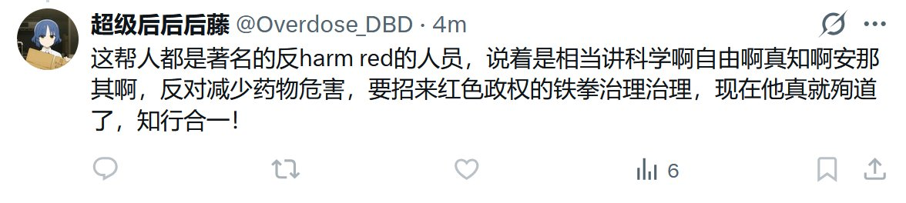

鼠尾草～🌿
@SalviaSWC
@Overdose_DBD 当事贴子，此人把我b了，所以我不能直接引用。请大家替我骂醒@Overdose_DBD

Rusty. V 🇨🇦🏳️⚧️
@wholock1011
@Overdose_DBD 我最开始还以为是约死那种就往死里磕，但现在发现好像不是为了自杀。这些人没harm reduction就算了，common sense都没有。还磕什么药，缺铁拳砸了。
鼠尾草～🌿
@SalviaSWC
何意味，爱德华死了还要找我"这帮人"的茬？我哪里反反对减少药物的危害了？@Overdose_DBD
你看过我这个澄清的贴子了吗？现在你看了吧，打脸不？不会骂人可以不骂，不要随意扩大攻击范围，以免招来不必要的敌意。 https://t.co/ls7XBCKq1R https://t.co/kTEF6Bmjww